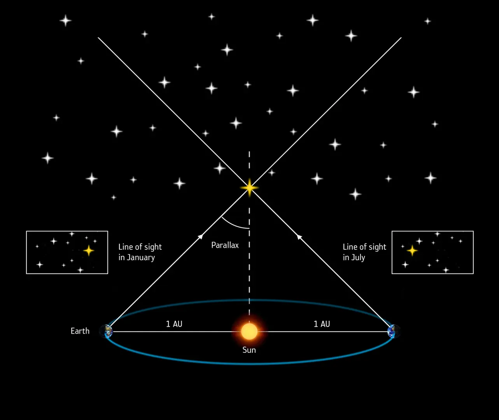
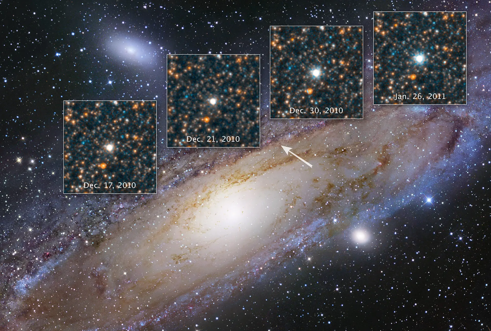
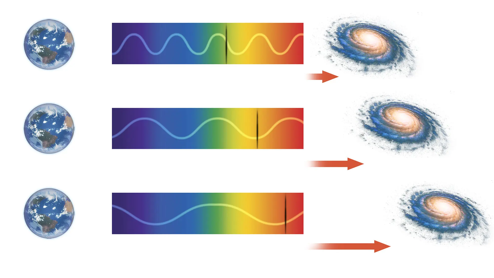

Представьте ясное ночное небо: сверкающие звёзды, рассыпанные по бескрайней тьме. Некоторые светят ярче, другие тусклее, и все они могут быть как соседями нашей Солнечной системы, так и частью далёких галактик, которые не видны человеческому глазу. Как же определить, насколько далеки от нас эти крохотные точки? Они могут находиться всего в нескольких световых годах от Земли или поразительно далеко — на расстоянии миллионов световых лет.
Космические дистанции трудно представить, ведь в повседневной жизни мы привыкли измерять расстояния в километрах или милях. Однако в мире астрономии всё обстоит иначе. Чтобы осознать масштабы Вселенной, важно познакомиться с единицами и методами, которые используют учёные. Эти знания помогут нам лучше понять размеры космоса и оценить расстояния до звёзд, галактик и других небесных объектов.
Единицы измерения в астрономии
В астрономии используются несколько специфических единиц измерения, которые позволяют эффективно работать с огромными расстояниями:
Световой год Световой год — это расстояние, которое свет проходит за один год. Приблизительно он равен 9,46 триллиона километров. С его помощью астрономы описывают расстояния до звёзд и галактик, которые находятся в миллионах световых лет от Земли. Значит, когда мы говорим о звёздах, находящихся на расстоянии 10 световых лет, мы имеем в виду, что свет от этих звёзд доходит до нас за десять земных лет.
Парсек (пк) — ещё одна важная единица, равная примерно 3,26 световых лет. Парсек активно используется для описания расстояний между звёздами. Эта единица основана на явлении параллакса, то есть изменении положения звезды, когда её наблюдают с разных точек на орбите Земли. Например, ближайшая к нашей Солнечной системе звезда Проксима Центавра находится на расстоянии ~1,3 парсека. То есть свет от неё достигает нас за ~4,24 земных года.
Как измеряют расстояния?
Астрономы используют три основных метода, которые помогают точно определять расстояния до объектов, находящихся далеко от нас:
Параллакс
Этот метод позволяет измерять расстояния до ближайших звёзд. Когда Земля движется по орбите, ближайшие звёзды кажутся смещёнными на фоне более удалённых объектов. Измеряя этот угол смещения, астрономы могут вычислить расстояние до звезды с помощью тригонометрии.
Например, звезда Сириус — одна из самых ярких на ночном небе — находится на расстоянии ~8,6 световых лет от Земли. Астрономы смогли определить это, измеряя её положение в разные времена года и анализируя угол смещения.
Космические стандартные свечи
Для более удалённых объектов астрономы используют «стандартные свечи», такие как цефеиды — переменные звёзды, яркость которых изменяется с течением времени и для которых известна истинная светимость. Измеряя их видимую яркость, астрономы могут сравнить её с известной истинной светимостью: если мы видим, что звезда светит менее ярко, это означает, что она находится на большем расстоянии от нас.
Такой метод позволяет определить расстояние до галактик, которые могут находиться на миллионы световых лет от Земли. Например, с помощью цефеид астрономы смогли измерить расстояние до галактики Мессье 81, расположенной примерно в 12 миллионах световых лет от нас.
Красное смещение
Для самых удалённых галактик используется явление красного смещения. Когда объекты удаляются от нас, их свет сдвигается в сторону более длинных волн, что делает его более красным. Измеряя этот сдвиг, астрономы могут оценить скорость удаления галактик и, следовательно, расстояние до них.
Например, благодаря наблюдениям красного смещения учёные обнаружили, что галактики удаляются от нас с возрастающей скоростью. Это стало одним из ключевых доказательств расширения Вселенной и способствовало разработке модели Большого Взрыва, объясняющей эволюцию нашей Вселенной с момента её возникновения.
Впечатляющие расстояния
Чтобы ещё лучше представить масштабы космоса, рассмотрим некоторые расстояния:
Солнце — наша звезда, которая находится на расстоянии ~8,3 световых минут (или около 150 миллионов километров) от Земли. Свет от него преодолевает это расстояние за 8 минут и 20 секунд (или 500 секунд).
Млечный Путь — наша галактика, которая имеет диаметр ~100 000 световых лет. Самая близкая к нам галактика, Андромеда, находится на расстоянии ~2,537 миллионов световых лет.
Объекты на краю видимой Вселенной (например, галактики и их скопления) находятся на расстоянии более 13 миллиардов световых лет. Это означает, что мы видим свет, который покинул эти галактики, когда Вселенная была ещё молода, всего лишь несколько миллиардов лет после её рождения.
Заключение
Космические расстояния — это не только о числах. Их исследование позволяет нам понять, как устроена Вселенная и какое место занимает наша планета среди бескрайних просторов. Так что в следующий раз, когда вы посмотрите на ночное небо, помните: вы не просто наблюдаете — вы становитесь свидетелями древних путешествий, которые длились миллионы лет.